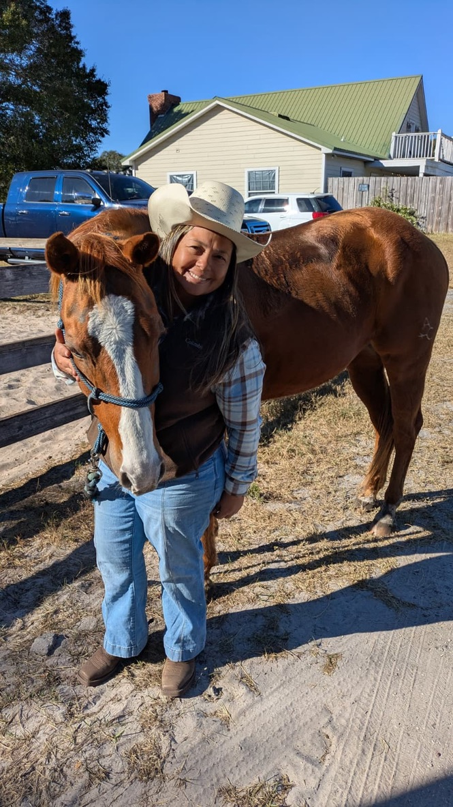

Fundadores
Dos miradas, un mismo corazón: el vínculo real entre caballo y humano.
Álvaro Rodríguez Colmenares

Horseman · Doma Racional · Coaching con Caballos
- Más de 45 años de experiencia
- Más de 600 potros domados
- Trayectoria en Venezuela, Texas y Florida
- Formador de caballos y personas
Su enfoque va más allá de la técnica: trabaja la relación caballo–humano como un espejo emocional. Para él, un caballo no se domina: se escucha, se entiende y se acompaña.
Luisana Gallardo Flores
Fundadora · Guía Emocional · Educación y Conexión
- Conexión emocional y acompañamiento a niños y familias
- Educación consciente a través del caballo
- Desarrollo de confianza, autoestima y comunicación
“El caballo saca la mejor versión de quien está dispuesto a escucharse.” Su enfoque integra educación emocional, procesos de acompañamiento y espacios seguros para sentir y crecer.